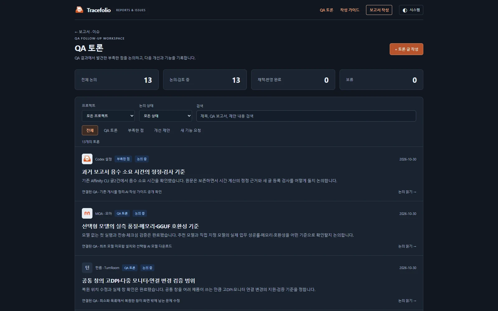
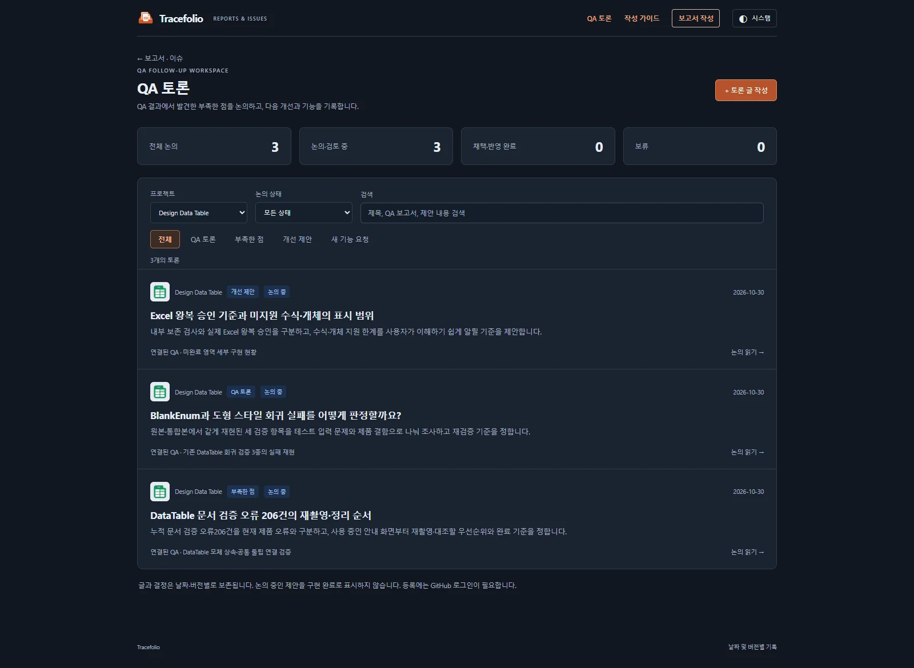

Codex 설정검토
Codex 설정검토기존 프로젝트 글308건 검토와 필요한 토론12건 등록
완료9개 프로젝트의 원문308건을 대조해 새 토론12건을 연결했습니다. 해결·중복 항목은 제외했고 전부 논의 중입니다. 기존 토론1건과 함께 총13건을 볼 수 있습니다.
작업 결과
검토 시작 시점의 글308건을 전체 읽고 제목·본문의 제한·미완료 항목과 후속 기록을 대조했습니다. 새 토론12건을 만들었고 기존 논의1건은 중복 생성하지 않았습니다. 모든 새 토론은 논의 중이며 승인·구현·해결로 표시하지 않았습니다.
| 프로젝트 | 연결된 새 논의 |
|---|---|
| Affinity CLI | Affinity CLI의 저장·내보내기와 화면 비점유 검증 기준 |
| Pixora | Pixora 외부 모델·렌더 파이프라인 검증 표본을 정할까요? |
| Design Data Table | DataTable 문서 검증 오류 206건의 재촬영·정리 순서 |
| Design Data Table | BlankEnum과 도형 스타일 회귀 실패를 어떻게 판정할까요? |
| Design Data Table | Excel 왕복 승인 기준과 미지원 수식·개체의 표시 범위 |
| EngineMigrator | EngineMigrator의 다음 실제 엔진 왕복 QA 합격 범위 |
| CodeAssist | CodeAssist 최신 버전 설치 후 108개 동작 대조를 어떻게 재개할까요? |
| CodeAssist | 색상 편집기 키보드·키 홀드·다중선택의 실제 입력 검증 |
| WindowsFolderSize | WindowsFolderSize 1.0.1 후보의 공개 전 확인 범위 |
| 턴룸 · TurnRoom | 공통 창의 고DPI·다중 모니터·연결 변경 검증 범위 |
| MOA · 모아 | 선택형 모델의 실측 품질·메모리·GGUF 호환성 기준 |
| Codex 설정 | 과거 보고서 음수 소요 시간의 정정·검사 기준 |
변경 내용
적용 내용
| 프로젝트 | 검토한 글 | 새 토론 |
|---|---|---|
| Codex 설정 | 26 | 1 |
| Affinity CLI | 3 | 1 |
| Pixora | 18 | 1 |
| Design Data Table | 98 | 3 |
| EngineMigrator | 10 | 1 |
| CodeAssist | 138 | 2 |
| WindowsFolderSize | 2 | 1 |
| 턴룸 · TurnRoom | 12 | 1 |
| MOA · 모아 | 1 | 1 |
CodeAssist의 With Snippets·화살표 Undo·자동 추천 중복/필터 종료, Pixora의 설정·미리보기·제목줄, 공통 창 복원, DataTable의 입력 손실·성능·문서 모바일 넘침은 후속 수정·검증 기록을 인정해 다시 열린 버그로 만들지 않았습니다.
기존 과거 QA/현재 이슈 구분 토론은 유지했습니다. 추가로 Affinity CLI 과거 글2건의 음수 소요 시간은 보고서 정정 기준 논의로 분리했습니다. 각 토론에 원본 QA 링크·정확한 인용·관찰 사실·제안·열린 질문을 기록했습니다.
원문을 이 작업에서 수정한 건수는0건입니다. 검토 중 다른 작업에서 원격 근거·완료 시각 등을 갱신한 후속 글3건은 변경 내용을 다시 읽고 최종 해시를 갱신해 검토 이력에 보존했습니다.
검증
원문308건의 최종 LF 정규화 해시와 정확한 인용25곳을 대조했습니다. 12개 새 글 모두 공통 JSON→Markdown→HTML 계약과 같은 프로젝트의 실제 QA 연결을 검사했습니다. 전체 글별 검토·제외·통합 이력
실제 Chrome 156에서51개 검사를 통과했습니다. 프로젝트별 토론 개수·원본 QA 링크·논의 중 상태·검색206을 확인했고, 토론13건과 기존 버그52건=단계합계52건도 확인했습니다. 페이지 오류0건입니다. 검증 결과


캡처는 실제 실행한 사이트 화면입니다. 목록은1600×1000·67,538바이트, DataTable은1600×1170·72,628바이트의 WebP로 압축하고 판독 품질을 확인했습니다.
남은 사항
이번 작업은 기존 문서 검토와 논의 등록입니다. 각 제품의 실제 프로그램·엔진·모델을 다시 실행하거나 현재 결함 여부를 새로 판정한 것이 아닙니다. 과거 제한의 현재 재현 여부는 미확인으로 유지하며, 토론의 제안은 추후 채택 여부를 정해야 합니다. 원문 일부가 과거 기록이므로 당시 결과를 현재 성공·실패로 바꾸지 않았습니다. 공개 배포는 푸시 후 Actions와 외부 페이지로 별도 확인합니다.
작업 시간
- 제안 시간: 20~35분
- 실제로 완료된 시간: 시작 2026-10-30 16:48:37 KST. 검토·논의 생성·최초 브라우저 검증 후 기록 2026-10-30 17:09:29 KST, 경과1252초. 공개 배포까지의 전체 완료 시간은 최종 채팅에 별도 기록합니다.
- XERJ: 미사용 — 기존 보고서와 후속 기록을 대조하는 작업으로 제품 코드 검색 불필요